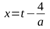
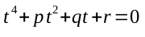
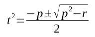
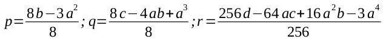
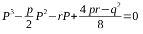
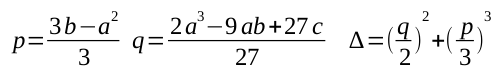
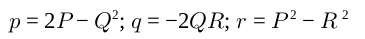
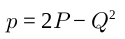
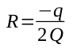
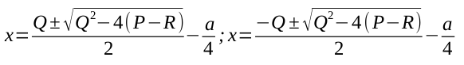

Una vez encontrado la solución general para las ecuaciones cúbicas deciden celebrarlo, pero el día de la celebración, Ferrari decide incursionar en las ecuaciones cuarticas, con lo cual trabaja con las leyes ya establecidas para las ecuaciones bicuadradas y consigue establecer lo siguiente:
Las raíces de la ecuación 𝑥4 + 𝑎𝑥3 + 𝑏𝑥2 + 𝑐𝑥 + 𝑑 = 0 se obtienen a partir de 2 casos.
El primer caso establece que si q = 0.
El sistema tiene una solución fácil de calcular, en donde aplicaremos un cambio de variable donde:
Llevándonos así a una ecuación incompleta:
Donde p, q y r son dados por:
Así que si tenemos q = 0, tenemos lo que se conoce como una ecuación bicuadrada, cuyas raíces cumplen:
El segundo caso establece que si q ≠ 0.
Si q ≠ 0 lo primero que hay que hacer es encontrar los valores de:
P es una raíz de la ecuación:
Una vez que hemos bajado el grado, aplicamos el teorema de Cardano para obtener las raíces de P, aunque la raíz que nos interesa es la real. Posterior a esto tenemos que determinar p, q y 𝛥, en donde de acuerdo al valor de la 𝛥 aplicaremos el teorema de Cardano según sea el caso. Para este paso aplicamos las fórmulas de Cardano.
La raíz real está dada por la respuesta de nuestro 𝛥.
Una vez hemos encontrado P volvemos a Ferrari para encontrar Q y R, mediante las siguientes fórmulas:
Sustituimos los valores de p y P para encontrar Q en la primera ecuación
Ya encontrado el valor de Q podemos encontrar R
Ya encontrados los valores de P, Q y R podemos encontrar las raíces cuarticas de la ecuación, mediante la fórmula:
